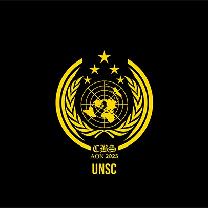

United Nations Security Council (UNSC)
“To deny people their human rights is to challenge their very humanity.”
– Nelson Mandela
AGENDA: The situation in the Middle East: Special focus on escalation of hostilities in the Israel-Palestine conflict
The Israel-Palestine conflict has reached a catastrophic juncture. Since October 2023, over 52,000 Palestinians have been killed and 118,000 injured in Gaza, with women and children accounting for 70% of the casualties. Following the collapse of the March 2025 ceasefire, Israel reinstated a severe blockade—cutting off access to food, water, and humanitarian aid—pushing 2.1 million people to the brink of starvation and disease.
UN experts have warned that the deliberate deprivation of essential resources and widespread destruction of infrastructure may constitute acts of genocide. They are urging the international community to move beyond rhetoric and take enforceable action to end the carnage and hold perpetrators accountable. In a historic move, the International Criminal Court has issued arrest warrants for leaders of both Israel and Hamas, citing alleged war crimes and crimes against humanity—signaling a new era of international legal scrutiny.
Humanitarian organizations are facing unprecedented challenges. Aid convoys have been blocked or targeted, critical infrastructure lies in ruins, and more than 660,000 children are out of school, enduring malnutrition, trauma, and disease. The United Nations Security Council's agenda is shaped by these grim realities and by urgent appeals from UN agencies and human rights groups.
Delegates must confront the immediate need for a ceasefire, the establishment of humanitarian corridors, and mechanisms for accountability. At the same time, they must grapple with long-term questions of reconstruction, justice, and the viability of a two-state solution. The Assembly of Nations 2025 offers a crucial platform for decisive diplomatic action—echoing the world's call to end the suffering and forge a just path forward for all affected communities.
**Single delegation committee with a cap of maximum 25 delegates.**